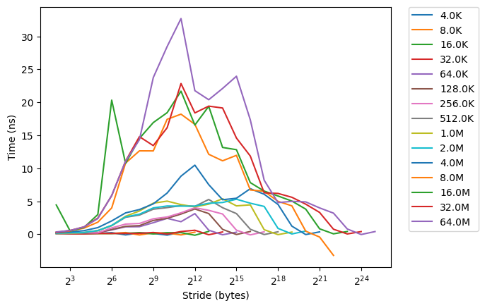
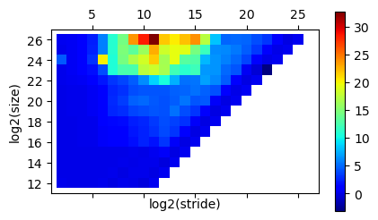

Applications of Parallel Computers
Single-Core Architecture
Prof David Bindel
Please click the play button below.
Welcome to another CS 5220 lecture! Today's topic is single-core
architecture, with an emphasis on two features that are
particularly relevant to HPC: instruction-level parallelism and
the memory hierarchy.
Just for fun
Let's start with something fun. This is an Nvidia promotional
thing that the MythBusters guys did a couple years ago.
Is this fair?
See:
“Should
I port my code to a GPU?”
I told you it would be fun, right? Unfortunately, this is not a
fair representation of what happens with well-tuned codes. See
Rich Vuduc's talk, linked. GPUs do have an edge, but a lot
of the advantage people attribute to GPUs comes from them taking
more care in writing fast GPU code than they took in writing
fast CPU code.
The real world
The video clips leans on some of the stereotypes we talked about
last time: namely, the idea that p processors gives you a p-fold
speedup. Well, we'll get to the parallel case. But for today,
we're talking about serial architecture. And people make equally
naive assumptions about the serial case.
The idealized machine
Address space of named words
Basic ops: register read/write, logic, arithmetic
Everything runs in the program order
High-level language \(\rightarrow\) “obvious” machine code
All operations take about the same amount of time
The problem isn't so much that people are naïve. It's that when we
tell people about computers in introductory programming classes,
we tell them lies. We tell them that memory is an address space
of named words laid out in linear order. Basic operations like
register reading, logic, and arithmetic take about the same amount
of time as each other. Everything runs in program order, and
high-level language statements translate to "obvious" machine
code. But none of this is really true. These abstractions are
adequate for thinking about correctness, but they fail to predict
performance.
The real world
Memory operations are not all the same!
In the real world, memory is not all the same. The one
dimensional address space we think of is an abstraction layered on
much more complicated hardware. Different parts of the memory
hardware have different speeds, and memory layout dramatically
affects performance.
The real world
Instructions are non-obvious!
Pipelining allows instructions to overlap
Functional units run in parallel (and out of order)
Instructions take different amounts of time
Cost depends on order, instruction mix
In the real world, instructions don't all take the same amount
of time, they don't all run in program order, and they run
willy-nilly on top of each other. Well, not willy-nilly. We
need rules to provide programmers the illusion of the idealized
machine. But the reality is a complicated mess, and that shows
up when we think about performance.
The real world
Our goal:
So, our idealized picture is too simple, and the real world is a
complicated mess. What are we going to do? Fortunately, we don't
need to understand the whole complicated mess to write
high-performance code. We just need to know enough to manage the
high-level design decisions that matter, and then we can try to
hand off the low-level details to the compiler.
Prelude
You shouldn't be surprised that I'm climbing on a soapbox before
we get to the technical stuff.
Prelude
We hold these truths to be self-evident:
One should not sacrifice correctness for speed
One should not re-invent (or re-tune) the wheel
Your time matters more than computer time
Some things are obvious. First, getting the wrong answer fast is
not success. Second, torturing yourself to do something that somebody
already has done better is not productive. Third, your time matters
more than the computer time does.
Prelude
Less obvious, but still true:
Most of the time goes to a few bottlenecks
The bottlenecks are hard to find without measuring
Communication is expensive (often a bottleneck)
Maybe less obvious but still true: most of your code does not
matter to performance. There are probably a few bottleneck
sections that account for most of the time. You really don't
know where those bottlenecks are in advance; you need to
measure. Often, though, the bottlenecks are associated with
communication, which cost a lot more than computation.
Prelude
A little good hygiene will save your sanity
Automate testing
Time carefully
Use version control
Finally, when you tune your code to run fast on modern
architectures, your code may get more complicated, or at least
change a lot. Don't spend all your time debugging problems you
introduce during tuning. Start with good test cases. Start with
good timing. And make sure you use version control, so you can
roll back to a working version when you break something.
All right. Climbing off my soap box.
A sketch of reality
Today, a play in two acts:
One core is not so serial
Memory matters
Now, on to the technical meat of the lecture. With apologies
to This American Life, today is a play in two acts. Act 1: One
Core is Not So Serial, in which we find out what parallelism lurks
in a single core. And Act 2: Memory Matters, in which we delve into
some of the messy details in the memory subsystem.
Act 1
One core is not so serial.
Let's start by talking about all the parallelism in a single core.
Parallel processing at the laundromat
Three stages to laundry: wash, dry, fold.
Three loads: darks, lights, underwear
How long will this take?
We'll start with pipelining. I love an overused metaphor, so
let's go with one of the most overused: pipelining as
laundry. There are three stages to laundry: washing, drying, and
folding. Suppose for simplicity that each takes an hour; I'm a
slow folder, I guess. And suppose I have three loads: darks,
lights, and underwear. How long will it take me to wash my
laundry?
Parallel processing at the laundromat
Serial version:
wash
dry
fold
wash
dry
fold
wash
dry
fold
The strawman approach, used by nobody who has ever done laundry
in practice, is to do each load of laundry in sequence: first
darks, then lights, then underwear. Each load takes three hours;
therefore, it's nine hours in total.
Parallel processing at the laundromat
Pipeline version:
wash
dry
fold
Dinner?
wash
dry
fold
Cat videos?
wash
dry
fold
Gym and tanning?
The smarter approach, probably used by most of you, is to make
sure the washer, drier, and folding table are all used at once, as
much as possible. This is called the laundry pipeline. Of
course, we won't be using the folding table at the beginning, or
the washer at the very end; it takes time to start and drain the
pipeline. But still, by overlapping the loads of laundry we
take only five hours, and have plenty of time left for cat
videos or dinner.
Pipelining
Pipelining works for instructions as well as for laundry. Each
instruction, or load of laundry, takes the same time to complete
with or without the pipeline; the latency does not change. But
by overlapping the instructions or the laundry, we can improve
the throughput, or completion rate per unit time. With enough
instructions, the potential speedup is equal to the number of
overlapping stages, though with fewer instructions we care about
the time to start and drain the pipeline.
Unfortunately, pipelining requires a systematic pattern. If we
are not sure what stage comes next, perhaps because of a branch
in our code, we cannot take advantage of the pipeline. We have
to introduce a so-called bubble, and that reduces our effective
throughput.
Pipelining
Different pipelines for different functional units
Modern processors actually have several different pieces, each
with their own pipelines. These functional units do simple
operations like floating point addition or multiplication. Some
functional units may not be pipelined (like dividers).
SIMD
S ingle I nstruction M ultiple D ata
Cray-1 (1976): 8 registers \(\times\) 64 words of 64 bits each
Resurgence in mid-late 90s (for graphics)
Now short vectors (256-512 bit) are ubiquitous
Pipelining is one way to get parallelism. Another is SIMD or
vector instructions. These have a long history, going back to
before I was born. When the old vector supercomputers gave way
to networked commodity systems, people focused on other things
for a while. But then there was a resurgence of interest in
short vector ops in the late 90s, mostly for graphics. After
that, vector operations became part of the computer architecture
mainstream. These instructions are ubiquitous now.
Wide front-end
Fetch/decode or retire multiple ops at once
Modern processors can also start or finish multiple operations
within a single cycle. The operations usually have to use
different parts of the processor, so a mix of instructions is
needed. Making everything more complicated, the instructions you
write are not the instructions the processor ultimately sees.
The front end translates your x86 instruction set architecture
into an internal standard that nobody but Intel knows about.
Unless you aren't using an Intel chip, of course.
Hyperthreading
Support multiple HW threads / core
Independent registers, program counter
Shared functional units
Helps feed core independent work
One program might not give us all the different types of
instructions needed to efficiently use a core. For that reason,
hyperthreading was introduced. Hyperthreading gives us the
illusion of two cores by providing multiple program counters and
register sets that sit in front of a common set of functional
unit resources. The idea is that if one program is only using
some of the functional units, another program might make use of
the rest.
Out-of-order execution
Internally reorder operations
Have to commit instructions in order
May throw away uncommited results
Limited by data dependencies
Each program looks like it's executed in sequential
order. That's a fib. Behind the scenes, instructions coming into
the functional units are scheduled in whatever order makes sense,
and are completed (or committed) in sequential order.
Sometimes, we might start running an instruction to keep a
functional unit busy, only to decide later that the result
should not be committed. This is the idea of speculative
execution.
We can reorder instructions any way we want if all the
instructions are independent. Usually, though, our out-of-order
scheduler is limited by data dependencies.
All together, now...
Front-end reads several ops at once
Ops may act on vectors (SIMD)
Break into mystery micro-ops (and cache)
Out-of-order scheduling to functional units
Pipelining within functional units
In-order commit of finished ops
Can discard before commit
Putting everything together: modern processor can read several
operations at once. Each operation might act on a full vector of
data. We break those operations into mystery micro operations
and cache them. Within the chip, an out-of-order scheduling unit
dispatches the micro operations to functional units. The
functional units are pipelined and can execute multiple
instructions simultaneously. At the end, we commit results in
order, to retain the illusion of sequential execution. To keep
the functional units from being left idle, we might try work
that we don't know we will need, deciding whether to complete
the instruction or not at commit time. This is called
speculative execution.
Does this sound complicated? It should!
Punchline
Compiler understands CPU in principle
Rearranges instructions to get a good mix
Tries to make use of FMAs, SIMD instructions, etc
The compiler understands the low-level details about instruction
mixes and vector operations. At least, it should. People have
been talking about sufficiently smart compilers for as long as
I've been around, but the compilers are not always as smart as
I'd like. Still, it's best to leave the low level details
to the compiler if we can.
Punchline
Needs help in practice:
Set optimization flags, pragmas, etc
Make code obvious and predictable
Expose local independent work
Use special intrinsics or library routines
Data layouts, algorithms to suit machine
The compiler won't understand high-level algorithmic changes
that might map well to the architecture of a modern machine.
The compiler does not need our help scheduling instructions. It
does need our help figuring out the layouts and algorithms that
suit our machines. We can also help it by calling special
intrinsics or library routines, and by making our code as
obviously parallelizable as possible, maximizing local
independent work and minimizing unpredictable branches.
And we can play with different
optimization flags for cases when the right approach is neither
obvious to the compiler nor to us.
Punchline
The goal:
You handle high-level optimization
Compiler handles low-level stuff
The end goal to all of this is that you should let the compiler
deal with the low-level details as much as possible. Your job
is to lay out your algorithms and data structures so that the
compiler and the processor can best do their jobs.
Act 2
Memory matters.
Now, let's move on to act two: the memory hierarchy.
Basic problem
Memory latency = how long to get a requested item
Memory bandwidth = steady-state rate
Bandwidth improving faster than latency
Inverse bandwidth remains worse than flop rate
Last time, we talked about the difficulty of slow memory. There
are two important numbers here: latency, or the time to get the
first item from memory; and bandwidth, or the steady state rate at which
items are delivered. Bandwidth is improving faster than
latency. But inverse bandwidth remains consistently worse than
flop rates.
My machine
Theoretical peak flop rate: 51.2 GFlop/s (w/o turbo)
Peak memory bandwidth: 31.79 GB/s (2 banks)
Arithmetic intensity = flops / memory accesses
Example: Sum several million doubles (AI = 1)?
So what can we do?
The arithmetic intensity of a code is the ratio of flops to
memory accesses. For example a dot product has arithmetic
intensity one; there are 2n operations and 2n data items.
What does this imply? Consider my laptop, with a theoretical
peak flop rate of 51 GFlop/s and peak memory bandwidth of about
32 GB/s. At arithmetic intensity 1, we are limited by bandwidth
to about 4 GFlop/s, much less than the peak. And matters are worse
if we have lots of latency costs in addition to the bandwidth costs.
Locality
Programs usually have locality
Cache hierarchy built to use locality.
Fortunately, we can get around the long latency and low
bandwidth of main memory by taking advantage of locality in our
programs. Two types of locality of access matter
to us: spatial locality, or the tendency to access things close
to each other in memory at around the same time; and temporal
locality, or the tendency to re-use the same piece of data
repeatedly in a short period.
Modern machines introduce a set of small, fast memories called
caches in order to speed up average memory access times. Caches
are designed to take advantage of spatial and temporal locality
in our codes. One implication of this is that if our codes
don't exhibit temporal or spatial locality, maybe they should;
it will let them run faster!
How caches help
This is mostly automatic and implicit.
Caches help us in several ways. First, they let us re-use data
loads; that is, they help us exploit temporal locality. Second,
they let us load data in big chunks instead of one byte at a
time, reducing the number of main memory latencies we suffer.
Data is typically loaded one cache line at a time, and features
like pre-fetching let the memory system grab a bunch of data
from memory without involving the processor.
For the most part, programmers do not directly control the
cache. Rather, what is cached or evicted (kicked out of cache)
depends on the memory access pattern that the hardware sees.
Cache basics
Store cache line s of several bytes
Cache hit when copy of needed data in cache
Cache miss otherwise. Three basic types:
Compulsory miss: never used this data before
Capacity miss: filled the cache with other things since this was last used – working set too big
Conflict miss: insufficient associativity for access pattern
We say a memory read hits the cache if we can find the data we
need in cache. Otherwise, we have a cache miss. There are
three basic types of misses. Compulsory misses, also called
cold-start misses, happen the first time that we touch a piece
of data. Capacity misses happen because we don't have room for
all the data we want, and so had to evict a data item that
we needed later. Conflict misses happen because of insufficient
associativity; though to make sense of that, we first need to
say what associativity is.
Cache associativity
Where can data go in cache?
Direct-mapped: each address can only go in one cache location (e.g. store address xxxx1101 only at cache location 1101)
\(n\) -way: each address can go into one of \(n\) possible cache locations (store up to 16 words with addresses xxxx1101 at cache location 1101).
Higher associativity is more expensive.
Associativity has to do with where we can cache a given address
from main memory. In a fully associative cache, we can put the
data anywhere in cache that we want. That gives us the most
possible flexibility, but the hardware is expensive. In a
direct-mapped cache, each address in main memory can only be
stored in one location in the cache. In an n-way set associative
cache, each address in main memory can be stored in one of n
locations in the cache. Usually, the last few bits of the
address are used to determine the cache line or set of cache
lines where a given chunk of data can be stored.
Teaser
We have \(N = 10^6\) two-dimensional coordinates, and want their centroid. Which of these is faster and why?
Store an array of \((x_i, y_i)\) coordinates. Loop \(i\) and simultaneously sum the \(x_i\) and the \(y_i\) .
Store an array of \((x_i, y_i)\) coordinates. Loop \(i\) and sum the \(x_i\) , then sum the \(y_i\) in a separate loop.
Store the \(x_i\) in one array, the \(y_i\) in a second array. Sum the \(x_i\) , then sum the \(y_i\) .
All right. Let's see how much we understand. Suppose I have a
million points in the plane, and I want their centroid. Which
of these ways of computing the centroid is fastest, and why? I
suggest trying it out for yourself. We'll discuss what you find
at the next meeting.
Caches on my laptop
32 KB L1 data and memory caches (per core),
256 KB L2 cache (per core),
2 MB L3 cache (per core),
What do caches look like in practice? On my Macbook Air, there
are three levels of cache. Fastest are the two 32 KB L1 caches,
one for code and one for data on each core. Then there is a 256
KB L2 cache and a 2 MB L3 cache. We have set associativity at
each level: 8-way for L1, 4-way for L2, and 12-way for L3.
All the caches are arranged into 64B lines.
A memory benchmark (membench )
for array A of length L from 4 KB to 8MB by 2x
for stride s from 4 bytes to L/2 by 2x
time the following loop
for i = 0 to L by s
load A[i] from memory
A useful way to see the effects of the memory system is with a
simple benchmark that repeatedly accesses different numbers of
array entries at different strides (distances apart in memory).
The stride is relevant to the spatial locality, as the
the last few bits of the address
are often used to determine the set of cache lines where data
can be stored. So accessing with a stride that is a large
multiple of two causes us to use the same set of cache lines
over and over. The number of locations we access is important
to temporal locality: more locations means more pressure on the
cache system.
I've linked to a repository for the membench code from the
slide. I suggest trying to build it on whatever machine you
plan to use for development. I used the OpenMP timing routines,
so it is not necessarily trivial to build everywhere. On a Mac,
for example, you need to be sure to use GCC rather than CLang,
since the CLang compiler in XCode doesn't support OpenMP.
Anyhow, give it a try, and post on Piazza if you run into trouble.
membench on my laptop

Raw timings (CSV)
The membench results are usually presented like this: one line
for each overall size, the stride on the x axis, and the time
in nanoseconds on the y axis. You can see the graph has a lot
of structure. Maybe those of you with good color vision can
suss out what is going on in detail. For myself I decided a
couple years ago that I prefer a different visualization.
membench on my laptop

Raw timings (CSV)
This is a heatmap picture of the same membench results. The
vertical axis represents array size, and the horizontal
represents the stride. The color represents the observed
latency. Maybe I could use better colors, but let me tell you
what I see here.
Latencies remain lower for strides less than 2^5. That is
partly because a cache line on this machine is 64 bits, so short
strides result in multiple hits per line loaded.
There are also three diagonals near the edge that remain low
latency. This is because near the diagonal, we have a small
working set. If we only ever read eight or fewer elements, then
it is fine if they all land on the same eight-line set within
the cache.
Each core has a 2 MB L3 cache, and we see nothing go too bad when
all data fits in at least one of the caches. We can also
faintly see a change in color at the vertical line corresponding
to 2^18 (256K), which is the L2 cache size.
We can see another diagonal-ish pattern about ten diagonals in.
It turns out that there is another part of the memory system, a
cache called the translation lookaside buffer (TLB). It has 512
entries, each corresponding to a 4K page. Missing in the TLB is
rather expensive, too.
Note that the ballpark estimate of 100 ns to go to main memory
seems like it is probably pessimistic. The worst memory times
I see on this machine, at least in this plot, are more like 30
ns. That is still an overhead I'd rather not pay too often.
membench on my laptop
Vertical: 64B line size (\(2^5\) ), 4K page size (\(2^{12}\) )
Horizontal: 32K L1 (\(2^{15}\) ), 256K L2 (\(2^{18}\) ), 2 MB L3 ((\(2^{21}\) )
Diagonal: 8-way cache associativity, 512 entry L2 TLB
OK, here are the numbers for my machine, but without the graph.
Really, though, I suggest that you download and run membench on
your own machine, and see what you can see about your own
memory system. If you do something better with the
visualization, tell me! I expect there is still a better way to
plot this data.
The moral
Even for simple programs, performance is a complicated function of architecture!
Need to know a little to write fast programs
Want simple models to understand efficiency
Want tricks to help design fast codes
Example: blocking (also called tiling )
So what is the moral of this whirlwind tour of architecture? I
think it is this: take care, but do not despair. The landscape is
complicated, but you only need to know the general contours of
that landscape to be able to write fast code. Design patterns
like tiling, which we will discuss in the next few lectures, can
help us use the memory subsystem efficiently. And to get the most
instruction-level parallelism for our buck, we just need to write
the computation in a way that exposes lots of independent work that the
compiler (and the processor) can then schedule efficiently.